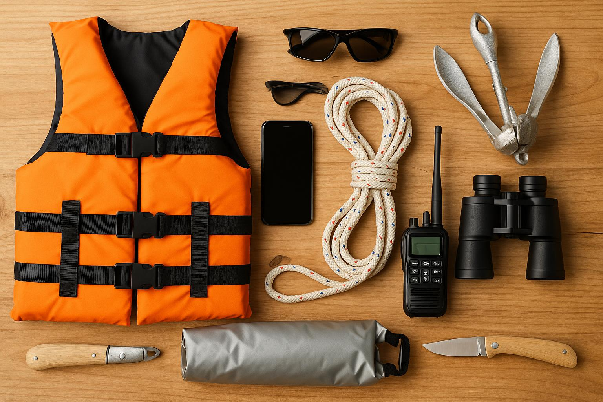
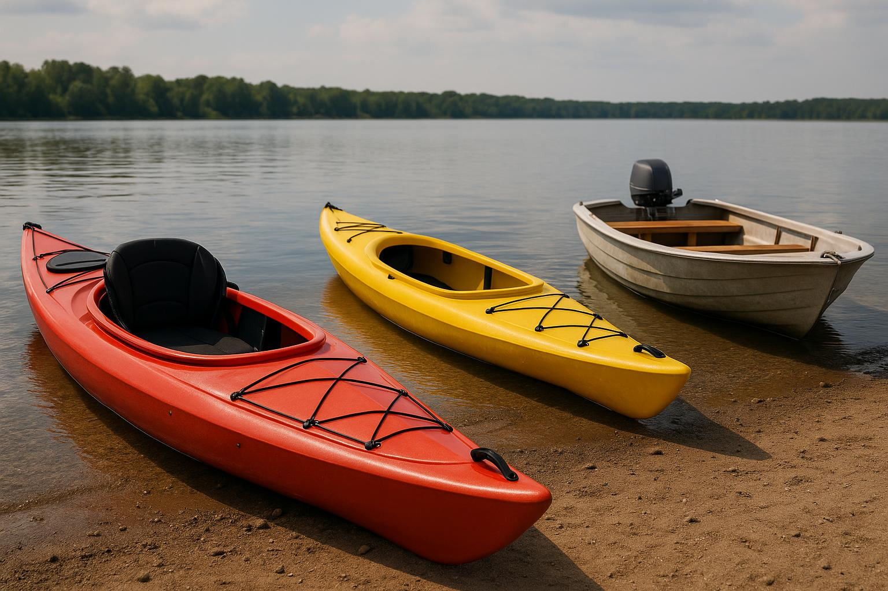
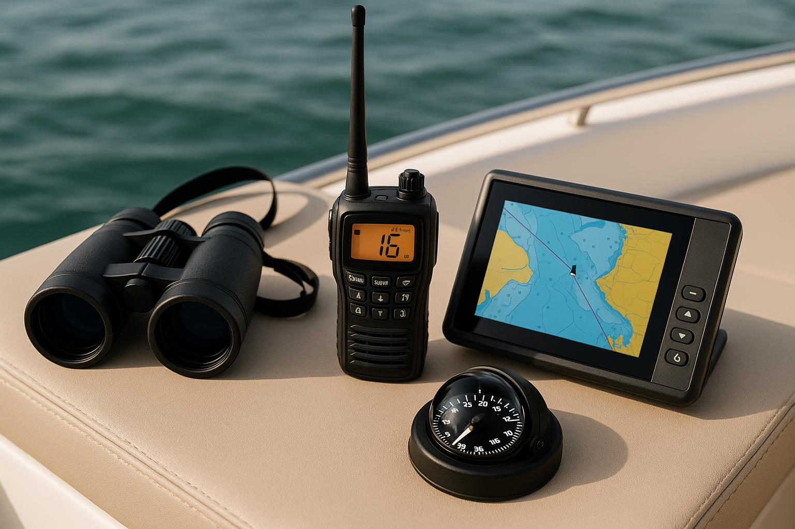
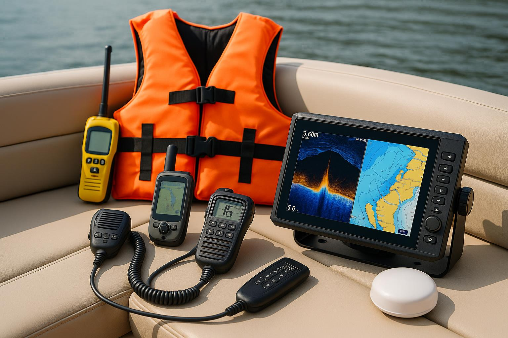
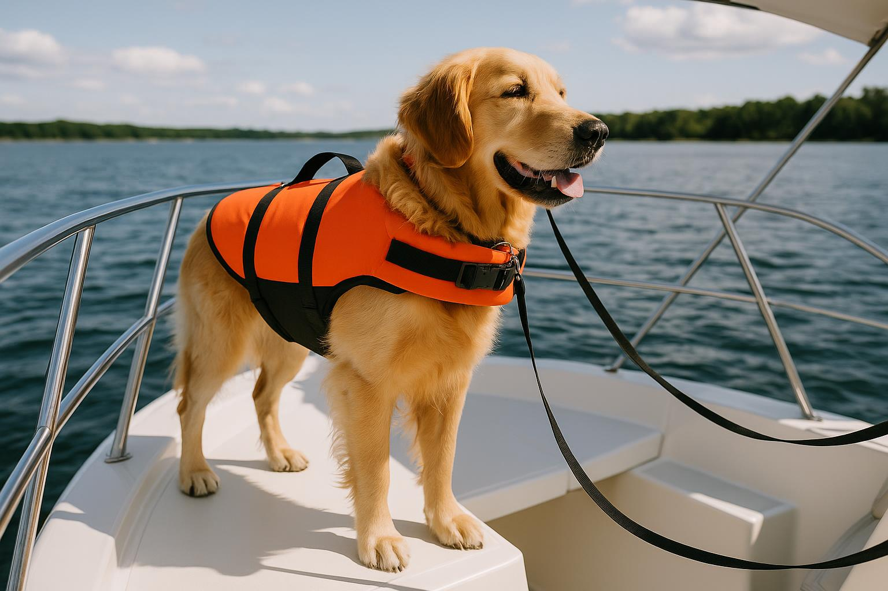

Boating Tips for Beginners: Checklist & Essential Gear Guide - BoatTEST
Venturing into the world of boating can be both exhilarating and daunting. Having the right information at your fingertips is crucial, especially if you are just starting out. This guide, featuring essential boating tips for beginners, provides a comprehensive checklist and an essential gear guide to ensure your experience is safe and enjoyable.
Practical Tips
Getting ready for your first boating adventure involves more than just securing a boat. Here are some practical tips to help ensure you’re prepared.
- Understand Local Regulations: Before setting out, familiarize yourself with the local boating laws. Each area may have different rules regarding speed limits, right-of-way, and safety equipment requirements.
- Choose the Right Boat: Depending on your intended activities—fishing, cruising, or watersports—different types of boats are suited for specific purposes. Research your options and decide which boat fits your needs.
- Plan Your Route: Chart your course ahead of time. Consider factors like distance, expected weather conditions, and water traffic. Be sure to share your plan with someone who isn’t going on the trip.
- Practice Docking: Before heading out on the water, practice docking your boat if you can. This skill is crucial for safety and will make your return much smoother.
- Take a Boating Safety Course: Consider enrolling in a safety course. Many organizations offer classes designed for beginners, covering essential topics such as navigation, equipment, and emergency procedures.

Quick Checklist
Use this quick checklist to ensure you have all the necessary gear and supplies before you embark on your boating journey.
- Safety Equipment:
- Personal Flotation Devices (PFDs) for all passengers
- First aid kit
- Fire extinguisher
- Sound signaling device (horn or whistle)
- Flashlight and extra batteries
- Navigational Tools:
- Chart or map of the area
- GPS device or smartphone with navigation app
- Compass
- Other Essentials:
- First-aid supplies
- Cooler with food and drinks
- Sunscreen and hats
- Towels and change of clothes
- Line and fenders for docking
- Maintenance Tools:
- Paddle (in case of engine failure)
- Basic tool kit
- Spare fuel and oil, if applicable

Essential Gear Guide
Having the right gear can make or break your experience on the water. Here’s a detailed breakdown of essential gear for beginners.
Types of Boats
As a beginner, choosing the correct type of boat is important. Here are some popular options:
- Jon Boats: Great for fishing and easy to handle.
- Cuddy Cabin Boats: Offers some shelter and storage for extended trips.
- Pontoon Boats: Excellent for social gatherings and leisure cruising.
- Sailboats: Good for learning navigation and sailing skills.
- Jet Skis: Fun for short excursions, but not ideal for long distances.

Must-Have Accessories
Along with your boat, consider these accessories to enhance your boating experience:
- Cooler: Keep food and drinks fresh during your outing.
- Fish Finder: Helpful for anglers looking to locate fish.
- Wakeboards and Water Skis: If you plan on towing riders, these are great additions.
- Anchor: Essential for stopping the boat in one place, especially for fishing or resting.

Technology and Gadgets
Boating technology has come a long way. Here are some gadgets that can enhance safety and navigation:
- VHF Radio: Essential for communication, especially in emergency situations.
- Marine GPS: Provides real-time navigation data and maps.
- Smartphone Apps: Numerous apps are available for weather tracking and navigation.
FAQ
1. What should I wear while boating?
Dress in layers, considering the weather conditions. It’s also wise to wear non-slip shoes and sun protection.
2. How can I ensure my boat is safe before going out?
Conduct a pre-launch checklist, including checking flotation devices, fire extinguishers, and ensuring all equipment is functional.
3. Is it necessary to have a boating license?
Many regions require a boating license for certain boat types. Check local regulations to determine what is mandatory.
4. What should I do in case of an emergency on the water?
Stay calm, use your VHF radio or signaling device to call for help, and use your life jackets if needed.

5. Can I take my pet on the boat?
Yes, many boaters enjoy bringing their pets along, but ensure that they wear a pet life vest and stay secure to prevent accidents.
By following these boating tips for beginners, equipped with the essential checklist and gear guide, you can embark on your maritime journeys with confidence. Safe travels on the water!
Related on MingMong: 5 Things About Vivo’s next phone will launch with a professional camera rig (2026) and Walkthrough and Mission List - Red Dead Redemption 2 Guide - IGN.
Source: Link